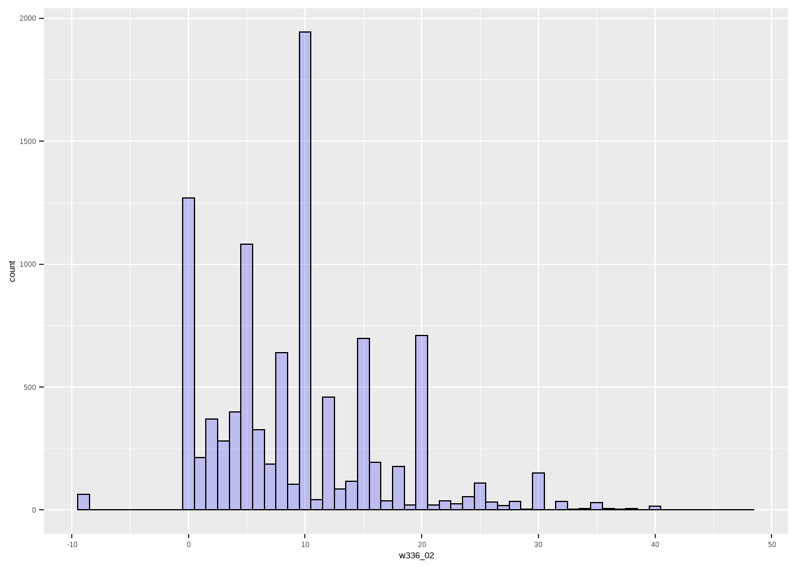
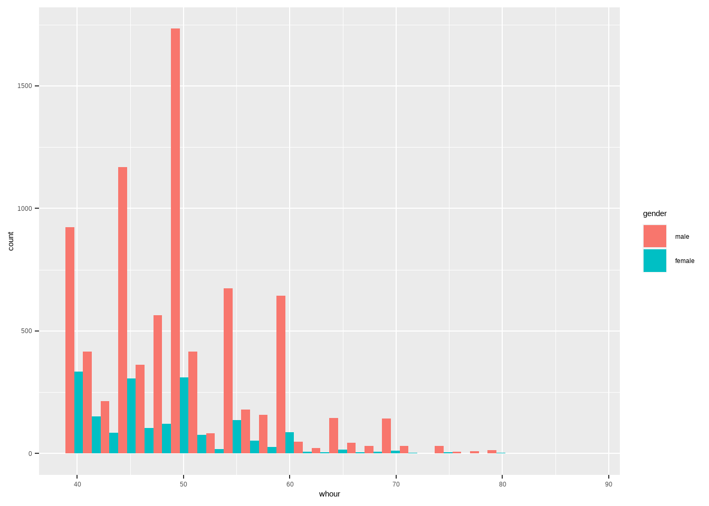

Chapter 5 데이터 시각화
5.1 들어가며
그래프는 강력하다. 10개의 표보다 잘 그린 그래프가 선명한 메시지를 전달한다. 그래프는 언제 필요할까? 많은 사람들이 연구 결과를 요약할 때만 그래프를 사용한다. 하지만 그래프는 데이터 전처리를 마친 후, 탐색적인 목적으로 활용될때 더욱 강점을 가진다. 내가 관심있는 변수의 분포는 어떠한지?, 이상치(outlier)는 없는지를 확인하는데 필요하다. 또한 변수간의 공분산covariance를 확인하는데도 그래프는 강력한 도구로 활용된다. 내가 미쳐 파악하지 못했던 변수간의 관계를 확인할 수 있다. 4장에서는 R의 또 다른 강점 중 하나인 데이터 시각화에 대해 알아보도록 하겠다.
R의 내장함수에서도 간단한 그래프 작업이 가능하다. 그러나 복잡한 그래프를 그리거나, 보다 심미적인 형태의 그래프를 그리고 싶다면 별도의 패키지를 활용하는 것이 필요하다. 3장에서 다루었던 tidyverse의 하위 패키지 중 하나인 ggplot2가 대표적이다. 이 장에서는 ggplot2를 활용하여 데이터를 효과적으로 시각화하는 방법에 대해 알아보겠다.
5.2 ggplot2의 설치 및 소개
5.2.1 ggplot2 설치
다른 여타의 패키지와 마찬가지로 ggplot2는 install.packages()로 설치가 가능하다. 단독패키지 설치도 가능하고 만일 tidyverse 설치가 되어있다면
library(tidyverse)로 불러오기만 하면 된다.
5.2.2 ggplot2의 작동 원리
ggplot2는 일종의 그래프를 그리는 문법을 갖고 있다. 이 문법은 일종의 layer를 쌓는 방식이다. 일러스트레이터와 같은 그림을 그리는 tool을 사용해본 사람들은 layer를 쌓는 방식에 익숙할 것이라 생각한다. 첫번째 layer에 스케치를 하고, 두번째 layer에 채색을, 세번째 layer에는 효과를 입히는 방식이다. layer라는 것은 일종의 투명한 도화지라고 생각하면 된다. 투명하기때문에 layer의 그림은 모두 보여지게 된다.
좀더 구체적으로 ggplot2의 layer 구조를 알아보자. ggplot2의 layer는 무한대로 쌓을 수 있으나, 기본적으로 포함되야 하는 layer는 다음과 같다.
- 사용될 데이터 (
data=) - x축과 y축에 사용될 변수 (
aes(x,y))3 - 그래프의 종류와 그래프의 심미적 요소(
geom_)
위의 layer에 더해 선택적으로 추가할 수 있는 layer는 다음과 같다.
- 에러 바 (
geom_errorbar()) - 축의 scale (
scale_) - 좌표 시스템 (
coord_) - 그래프의 배경 (
themes_) - 그래프의 분리 (
facet_) - 축 라벨 (
labs_)
5.2.3 변수의 갯수, 유형과 그래프 종류
데이터를 시각화하는 작업은 매우 탐색적이다. 다시 말해 어떠한 변수(들)을 선택할지, 변수들의 어떠한 값을 어떻게 보여줄지에 따라 선택할 수 있는 그래프의 유형은 매우 다양하다. 자료의 시각화를 위한 의사결정의 단계를 정리해보면 다음과 같다.
첫째,
변수의 갯수: 하나의 변수의 빈도나 분포를 볼 것인가? 아니면 두개 이상의 변수의 관계를 볼 것인가?둘째,
변수의 유형: 선택한 변수의 유형이 무엇인가? 범주변수(categorical)인가? 순서형(ordinal)인가? 연속형(continuous)인가?
위의 내용이 결정되면 선택할 수 있는 그래프의 유형이 좁혀진다. 예를 들어, 변수의 갯수가 1개라면, scatter plot 그래프를 그리는 것이 불가능하다. 변수의 갯수가 2개 더라도 둘 다 범주변수라면 scatter plot을 그릴 수 없다. ggplot2를 배우는 초보자들에게 빈번하게 발생하는 실수가 이런 형태이다. 변수 갯수 및 유형과 그래프 유형과의 관계를 반드시 이해해야 한다.
5.3 변인이 1개인 graph
5.3.1 변인이 연속형(continuous)인 경우
앞서 dplyr에서 작업했던 worker_3 데이터를 활용하여 그래프를 그려보자. woker_3 데이터의 w336_01과 w336_02는 각각 주당 정규 근로시간과 초과 근로시간을 의미한다. 근로시간은 0부터 시작되는 연속형 변수이기 때문에 이 변수를 x축으로 두고, y축은 빈도나 비율로 표현하는 히스토그램histogram과 밀도그래프density를 그릴 수 있다.
5.3.1.1 historam
w336_02(초과 근로시간)의 빈도분포를 알고 싶다면 히스토그램을 그려보면 된다. ggplot2에서 histogram을 그리기 위한 함수는 geom_histogram이다. 앞서 설명한 ggplot2의 명령어구조를 떠올리며 아래 코드를 해석해보자.
- 첫 줄은
ggplot()으로 특정 데이터를 활용해서 그래프를 그리겠다는 첫번째 layer에 해당된다. 우리는 worker_3_se를 사용할 예정이기 때문에 괄호안에 해당 데이터프레임 이름을 적어준다. - 다음 layer는 그래프의 유형, 그래프에서 사용할 변수, 그리고 기타 옵션지정이다. 편의상 옵션은 생략하고 그래프의 유형(histogram)과 변수(w336_02)만 지정해주자. 히스토그램을 그리기 위한 명령어는
geom_histogram()이다. 그리고 괄호안에는aes(x=변수명)을 추가한다. 이때 aes는 aesthetic의 약자이다. - layer를 추가할때는
+로 연결해준다. - 산출되는 그래프를 별도의 객체로 지정하고 싶다면
->를 이용해서 간단히 객체명을 기입하면 된다. 이렇게 하면 해당 객체명을 실행하면 언제든지 그래프를 불러올 수 있다.
ggplot(worker_3_se)+
geom_histogram(aes(x=w336_02))
## `stat_bin()` using `bins = 30`. Pick better value with `binwidth`.위의 명령어를 실행하면 ‘stat_bin()’ using ‘bins=30.’ Pick better value with ‘binwidth’ 라는 에러메시지가 뜬다. 히스토그램에서 bin이란 빈도를 카운트하는 범주를 의미한다. 즉, 히스토그램의 막대 너비를 의미한다. 우리가 별도의 지정을 해주지 않았기 때문에 프로그램에서 자동으로 bin의 갯수를 30개(bins=30)로 지정했으니 더 나은 값을 지정해주라는 의미이다. 막대 너비를 지정하는 방식은 bin의 갯수를 지정하는 방식(bins=OO), 또는 bin의 너비를 지정하는(binwidth=OO) 방식이 있다. 통상 사용하는 binwidth를 지정하는 방식을 사용해보자. 1시간단위로 빈도를 보기 위해 binwidth=1로 지정하자. 이를 위해서는 geom_histogram()에 해당 코드를 쉼표로 연결만 해주면 된다.
ggplot(worker_3_se)+
geom_histogram(aes(x=w336_02), binwidth=1)
이왕 이야기가 나온김에 몇가지의 옵션을 더 지정해보자. ggplot2에서는 기본적으로 면 색깔(fill), 면색깔의 투명도(alpha), 선 색깔(color), 선 종류(linetype) 등을 변형시킬 수 있다.
- 색은 특정한 색의 명칭을 직접 기입하거나(따옴표 필수), RColorBrewer와 같이 RGB 값을 직접 기입하여 색을 지정할 수도 있다.
- 면 색(fill)은 투명도(alpha)를 조절할 수도 있다. 0~1사이의 값을 자유롭게 지정하면 된다. 0에 가까울수록 투명해진다
ggplot(worker_3_se)+
geom_histogram(aes(x=w336_02), binwidth=1, color="black", fill="blue", alpha=0.2)
만일 x축과 y축의 명칭을 수정하거나, 그래프의 제목을 달고 싶다면 어떻게 해야 할까? 마찬가지로 layer를 추가해주면 된다. 이때 쓰이는 명령어는 labs(title="", x="", y="")이다.
ggplot(worker_3_se)+
geom_histogram(aes(x=w336_02), binwidth=1, color="black", fill="skyblue", alpha=0.2)+
labs(title="근로자의 주당 초과근로시간", x="주당 초과근로시간", y="빈도(명)")그래프의 배경을 변경하고 싶다면 theme_ 명령어를 사용하도록 한다. 마찬가지로 layer를 추가해주면 된다. theme_minimal() layer를 추가하여 배경을 최소화하기 위해서는 아래와 같이 코드를 작성하면 된다.
* theme_grey() : 회색 배경 (defalut)
* theme_bw() : 하얀 배경에 격자무늬
* theme_classic() : 하얀 배경에 격자무늬 없음
* theme_minimal() : 배경 최소화
ggplot(worker_3_se)+
geom_histogram(aes(x=w336_02), binwidth=1, color="black", fill="skyblue", alpha=0.2)+
labs(title="근로자의 주당 초과근로시간", x="주당 초과근로시간", y="빈도(명)")+
theme_minimal()
이제 ggplot2의 명령어 구조에 대해서 어느정도 감을 잡았을 것이라 생각한다. 다른 그래프들도 명령어 구조가 거의 유사하기 때문에 쉽게 응용할 수 있을 것이다. 좀 더 심화된 과정으로 ggplot2와 dplyr의 결합방식을 알아보도록 하자.
바로 윗 단락에서 확인했던 히스토그램을 보면 -10으로 응답한 사람들이 몇명 있는 것을 확인할 수 있다. 보통 패널데이터의 마이너스 값은 무응답 등과 같은 결측치이다. 결측치를 제거하고 그래프를 그리기 위해서 dplyr를 활용해 바로 데이터를 변형하여 그래프를 그려보도록 하자.
worker_3_se %>%
filter(w336_02>=0) %>%
ggplot()+
geom_histogram(aes(x=w336_02, y=..density..), binwidth=1, color="black", fill="skyblue", alpha=0.2)+
labs(title="근로자의 주당 초과근로시간", x="주당 초과근로시간", y="빈도(명)")+
theme_minimal()
복잡해보이지만 dplyr의 chain operator를 사용하여 간단히 데이터 필터링(w336_02가 0보다 같거나 큰 case만 선택)한 후에 ggplot() 구문을 결합하는 구조이다. 간혹 ggplot() 구문에 레이어를 추가할때 +이 아닌 %>% 을 쓰는 실수가 발생하는데 이것만 주의한다면 데이터 변형도 쉽게 진행할 수 있다. ggplot2의 장점은 이렇게 dpyr와 결합하여 데이터의 실제 변형 없이 임시적인 변형으로 그래프를 그릴 수 있다는 것이다.
다른 형태의 데이터 변형도 시도해보자. 당초 우리의 관심 변수가 주당 정규근로시간(w336_01)과 추가근로시간(w336_02)였다. 이를 합산하여 workingHour라는 변수를 생성하여 히스토그램을 그려보자. 아래 코드를 보면 (1)worker_3_se 데이터를 가져와서 (2) 주당근로시간 변수들이 0 이상인 관측치만 필터링 해서 (3) histogram을 그리라는 흐름을 갖고 있다.
worker_3_se %>%
filter(w336_02>=0 & w336_01>=0) %>%
mutate(whour=w336_01+w336_02) %>%
ggplot()+geom_histogram(aes(x=whour), binwidth=1, color="black", fill="skyblue", alpha=0.2)+
labs(title="근로자의 주당 근로시간", x="주당 근로시간", y="빈도(명)")+
theme_minimal() 히스토그램에서 y축을 빈도가 아닌 비율로 바꿀 수도 있다. aes(y=) 옵션에서 이를 해결할 수 있다.
히스토그램에서 y축을 빈도가 아닌 비율로 바꿀 수도 있다. aes(y=) 옵션에서 이를 해결할 수 있다. aes(y=..density..) 옵션을 추가하면된다. y축을 density로 변형시킨다는 것은 bin의 관측치수/전체 관측치수를 의미한다. 즉, 해당 bin의 사례수가 전체 사례의 몇 %를 차지하는지 확인할 수 있다. 참고로 density 앞뒤에 마침표 두개(..)를 반드시 붙여야 일반적인 변수명과 구분이 된다는 점을 기억하자. 만일 마침표를 붙이지 않는다면 R은 density라는 이름의 변수를 y축에 할당하려고 해서 에러가 발생한다.
worker_3_se %>%
filter(w336_02>=0 & w336_01>=0) %>%
mutate(whour=w336_01+w336_02) %>%
ggplot()+geom_histogram(aes(x=whour, y=..density..), binwidth=1, color="black", fill="skyblue", alpha=0.2)+
labs(title="근로자의 주당 근로시간", x="주당 근로시간", y="density")+
theme_minimal()5.3.1.2 density curve
연속형 변수 1개로 표현할 수 있는 그래프중 하나는 density curve이다. density curve는 x축 변수의 확률(probability)를 의미한다. 따라서 curve의 면적을 모두 더하면 100%, 즉 1의 확률이 된다. density curve는 변수의 분포를 확인할때 사용되며, 다음과 같이 해석한다.
- density curve의 y축은 확률이다
- density curve의 면적의 합은 1이다.
- density curve가 왼쪽으로 skewed 되어 있다면, 평균값이 중앙값보다 작다는 것을 의미한다.
- density curve가 오른쪽으로 skewed 되어 있다면 평균값이 중앙값보다 크다는 것을 의미한다.
- density curve가 skewed 되어 있지 않다면 평균값과 중앙값이 같음을 의미한다.
worker_3_se %>%
filter(w336_02>=0 & w336_01>=0) %>%
mutate(whour=w336_01+w336_02) %>%
ggplot()+geom_density(aes(x=whour), color="black", fill="skyblue", alpha=0.2)+
labs(title="근로자의 주당 근로시간 ", x="주당 근로시간", y="density")+
theme_minimal()
산출된 density curve를 보니 왼쪽으로 상당히 skewed 되어 있는 모습이다. 여기에 mean 값을 표현하는 그래프를 layer로 추가해보도록 하자. 그래프에 특정 값을 수직선으로 표현하기 위해서는 geom_vline(aes(xintercept=))의 명령어를 사용하면 된다. 수직선의 색을 파란색, 선 유형은 점선으로 옵션을 지정해보자.
worker_3_se %>%
filter(w336_02>=0 & w336_01>=0) %>%
mutate(whour=w336_01+w336_02) %>%
ggplot()+geom_density(aes(x=whour), color="black", fill="skyblue", alpha=0.2)+geom_vline(aes(xintercept=mean(whour)), color="blue", linetype="dashed", size=1)+
labs(title="근로자의 주당 근로시간 ", x="주당 근로시간", y="density")+
theme_minimal()5.3.1.3 histogram + density curve
ggplot2의 장점은 layer를 무한대로 쌓을 수 있어 여러개의 그래프를 겹쳐서 그릴 수 있다는 점이다. 위에서 살펴본 histogram과 density curve를 하나의 그래프에 표현해보자. 간단하게 + 기호로 두개의 geom_ 명령어를 합치기만 하면 된다. 주의 할점은 두개 이상의 그래프를 겹칠때 x축과 y축은 모두 동일한 변수 또는 통계값이어야 한다는 것이다. geom_histogram의 default는 빈도수(count)이기 때문에 aes(y=..density..) 옵션을 활용해서 y축을 density curve와 동일하게 맞추어야 한다.
worker_3_se %>%
filter(w336_02>=0 & w336_01>=0) %>%
mutate(whour=w336_01+w336_02) %>%
ggplot()+geom_density(aes(x=whour), linetype="dashed", fill="blue", alpha=0.1)+geom_histogram(aes(x=whour, y=..density..), binwidth=1, color="black", fill="skyblue", alpha=0.2)+
labs(title="근로자의 주당 근로시간 비중", x="주당 근로시간", y="density")+
theme_minimal()5.3.1.4 집단별 그래프 비교
근로자의 주당 근로시간이 대체로 40~52시간 사이에 몰린 오른쪽 꼬리가 긴 분포를 갖고있는 것을 확인했다. 다음 질문은 혹시 성별에 따라 주당 근로시간에 차이가 있을것인가 이다. 통상적으로 여성의 가사부담시간이 많으므로 여성의 주당근로시간의 분포가 좀더 적을것이라 예측할 수 있다. 간단히 평균의 차이를 보는것도 방법이지만, 그래프로 분포를 보면 더욱 많은 정보를 확인할 수 있다.
ggplot2는 성별과 같은 변수에 따라 색이나 linetype을 다르게 하여 시각적인 집단 구분을 가능케 해준다. 먼저 작업해야 할 것은 성별 등의 집단변수를 factor 변수로 만들어주는 일이다. 여기서 tidyverse 패키지군 중에 또 하나의 유용한 패키지인 forcats을 소개하도록 하겠다. forcats(for catagorical variable의 약자)는 초보자에게 많은 시련을 안겨주는 factor형 변수를 조작하는데 아주 유용한 패키지이다. 직관적이며, 쉬운 코드 구조를 자랑한다.
우선 데이터(worker3_se)에서 성별 변수(w3_sex)를 찾아보자. 변수가 숫자형(numeric)인지 팩터형 변수로 저장되어 있는지를 확인하기 위해서는 str 명령어를 활용하면 된다. 또한 missing 값들이 엉뚱한 값으로 코딩되어 있을 수도 있으니 count 명령어를 통해 대략적인 값별 빈도를 알아보자.
str(worker_3_se$w3_sex)
## int [1:10019] 1 1 1 2 1 1 2 1 1 1 ...
worker_3_se %>%
count(w3_sex)
## w3_sex n
## 1 -9 10
## 2 1 8124
## 3 2 1885결과를 살펴보면 숫자형의 일종인 정수형(int)으로 표현 되어 있고(1 또는 2의 값), 성별 불상인 10명이 -9로 코딩되어 있는 것을 확인할 수 있다. 따라서 우리는 세 단계의 작업을 수행해야 한다.
filter함수를 활용해서 성별 불상인 10명을 제거mutate와as_factor를 활용해서 w3_sex를 factor형 변수로 변환하고 변수명을 gender로 변환mutate와fct_recode를 활용해서 level의 값을 수정한다. fct_recode는 level의 순서변경이나 명칭변경, 병합등의 강력한 기능을 갖고 있다. 여기서는 1의 값에 male, 2의 값에 female의 레벨 정보를 부여하였다.
worker_3_se %>%
filter(w336_02>=0 & w336_01>=0) %>%
mutate(whour=w336_01+w336_02) %>%
filter(w3_sex>0) %>%
mutate(gender=as_factor(w3_sex)) %>%
mutate(gender=fct_recode(gender, male="1", female="2"))-> worker_3_fa
str(worker_3_fa$gender)
## Factor w/ 2 levels "male","female": 1 1 1 2 1 1 2 1 1 1 ...성별변수를 팩터형 변수로 전환하였으니, 이제 성별에 따른 주당 근로시간을 비교하는 그래프를 그려보자. 집단에 따라 구분된 그래프를 그리는 방법은 크게 두가지가 있다.
하나의 패널에 집단별로 색깔, 선모양 등으로 그래프를 구분하여 그리는 방법 :
aes(fill=gender)등의 명령어로 처리 가능두개의 패널에 집단별 그래프를 각각 그리는 방법:
facet_wrap(~gender)등의 명령어로 처리 가능
가장 간단한 히스토그램부터 시작해보자. 한개의 패널에 여러집단의 그래프를 동시에 그리는 것은 aes 옵션안에 fill=gender 등을 삽입하여 간단히 수행할 수 있다. 만일 선의 색깔로 집단별 그래프를 구분하고 싶다면 color=gender 옵션을 사용하는 식이다. position="dodge"는 여러분이 처음 접하는 옵션일 것이다. 만일 이 옵션이 없이 아래 명령어를 실행하면 여성과 남성의 근로시간이 하나의 막대에 표현된다. 우리는 누적 빈도에는 관심이 없으니 막대를 분리하기 위해 position="dodge" 명령어를 쓴다.
worker_3_fa %>%
ggplot()+geom_histogram(aes(x=whour, fill=gender), position="dodge")
## `stat_bin()` using `bins = 30`. Pick better value with `binwidth`.
그래프 출력결과를 살펴보면 뭔가 이상하다. 우리는 여성이 남성에 비해 근로시간이 짧다는 것을 확인하고 싶었는데, y축이 빈도이다 보니 사례수가 압도적으로 많은 남성이 어떤 구간에서나 빈도가 많은 것처럼 보인다. 따라서 y축을 density(y=..density..)로 바꾸어서 그려보자. 또한 좀더 조밀하게 보기 위해 bin의 너비를 1로 지정해보자(binwidth=1)
worker_3_fa %>%
ggplot()+geom_histogram(aes(x=whour, y=..density.., fill=gender), position="dodge", binwidth=1)두번째로 복수의 패널에 집단별 그래프를 분리해서 그리는 방법을 알아보자. 이때는 aes() 옵션을 사용하지 않고 facet_wrap(~)으로 layer를 추가 생성한다. 아래 코드를 보면 gender라는 팩터형 변수의 값별로 그래프를 구분해서 그리라고 명령하고 있다.
worker_3_fa %>%
ggplot()+geom_histogram(aes(x=whour, y=..density..), binwidth=1)+
facet_wrap(~gender)5.4 변인이 2개인 graph
5.4.1 Continuous X, Continuous Y
5.4.1.1 산점도 goem_point
연속형 변인 두개를 활용한 그래프는 대체로 상관관계에 기초한다. 즉, X가 증가할때 Y가 증가, 또는 감소하는 패턴을 갖는가를 확인할때 사용한다. 가장 대표적인 그래프는 scatter plot 이다. X에 대응되는 Y의 값을 점으로 표현하여 패턴을 확인하는 것이다. ggplot2에서는 geom_point() 명령어를 활용한다. `geom_point()’는 괄호 안에 aes(x=, y=)를 통해 변수만 지정해주면 된다.
아래의 코드는 총 근로시간(whour)과 월근로소득(w337_02)의 산점도를 그린 것이다4. 산출된 그래프를 보면 총 근로시간이 증가할 수록 월 근로소득이 증가하는 약한 경향성이 보인다.
worker_3_fa %>%
filter(w337_02>0) %>%
ggplot()+geom_point(aes(x=whour, y=w337_02))5.4.1.2 선그래프 goem_smoth
좀 더 구체적인 상관관계를 확인하기 위해서는 geom_smooth()을 사용하여 추세선을 그릴 수 있다. 다양한 method로 선형 또는 비선형 추세선을 그릴 수 있는데, 여기서는 우리에게 익숙한 선형 모델링(linear modeing, lm)으로 추세선을 그려보도록 하겠다5. 위의 코드에서 geom_smooth() 레이어를 쌓으면 되는데, 이때 x축과 y축의 변수 지정을 반복해서 기입해야 하는 것이 번거러울수 있다. 이 경우 ggplot()안에 aes()를 지정하면 중복기입을 피할 수 있다.
worker_3_fa %>%
filter(w337_02>0) %>%
ggplot(aes(x=whour, y=w337_02))+geom_point()+geom_smooth(method='lm')
## `geom_smooth()` using formula 'y ~ x'위의 그래프를 자세히 살펴보면 산점도(검은색 점)과 선그래프(파란색 라인)이 하나의 레이어에 겹쳐져 있는 것을 볼 수 있다. 선 그래프에는 추세선뿐만 아니라 회색의 음영이 존재한다. 이는 회귀식을 추정할때 계산되는 신뢰구간(confidence interval, CI)이다. 보통 default로 CI값이 보고된다. CI 등을 포함해서 geom_smooth에서 사용되는 arguments와 aesthetics 등을 정리하면 다음과 같다.
method: 추세선을 그리기 위한 함수 종류,lm,glm,gam,loess등이 있다. 지정하지 않는 경우 sample size를 고려하여 자동으로 지정해준다.se: 신뢰구간, default로 보고해준다. 숨기려면se=FALSE옵션을 삽입한다.level: 신뢰수준, default=0.95이며, 변경하고 싶은 경우level=0.99등의 옵션을 삽입한다.
na.rm: 결측치를 제거한다(관련 경고문 함께 출력됨), default가 FALSE이며, 사용하고 싶은 경우na.rm=TRUE옵션을 삽입한다.
앞서 살펴본 histogram 처럼 산점도나 선그래프 역시 집단별로 구분하여 그래프를 그릴 수 있다. 한 그래프에 색깔로 집단을 표현하는 방식(colour=group)과 별도의 그래프를 그리는 방식(facet_wrap(~group))의 방식을 각각 사용해보자.
근로시간과 임금에 영향을 미치는 대표적인 변수들은 산업군(w3_ind1)과 사무직/생산직 여부(w3_posit)일것이다. 집단비교를 위해서는 변수를 factor변수로 변환해야 하기 때문에 as_factor와 fct_recode 구문을 활용하여 팩터형으로 변환해야 한다. 이렇게 저장된 worker_3_final을 활용하여 position과 industry별로 근로시간-임금의 관계가 어떻게 다른지 확인할 수 있다.
worker_3_fa %>%
mutate(industry=as_factor(w3_ind1)) %>%
mutate(industry=fct_recode(industry, maufacture="1", finance="2", service="3")) %>%
mutate(position=as_factor(w3_posit)) %>%
mutate(position=fct_recode(position, whitemanager="1",bluemanager="2", whiteworker="3", blueworker="4"))->worker3_final
worker3_final %>%
filter(w337_02>0) %>%
ggplot()+geom_point(aes(x=whour, y=w337_02, colour = industry))+geom_smooth(aes(x=whour, y=w337_02, colour=industry), method='lm')
## `geom_smooth()` using formula 'y ~ x'
worker3_final %>%
filter(w337_02>0) %>%
ggplot()+geom_point(aes(x=whour, y=w337_02, colour = position))+geom_smooth(aes(x=whour, y=w337_02, colour=position), method='lm')
## `geom_smooth()` using formula 'y ~ x'결과를 살펴보면 금융업일수록 임금 평균수준이 높고, 근로시간-임금의 상관관계가 강하게 나타나는 것을 확인할 수 있다. 또한 관리자일 수록 임금수준이 높고, 근로시간은 짧다. 생산직근로자일수록 근로시간이 길고, 임금 수준은 낮은편이다. 이처럼 scatter plot을 집단별로 구분하여 살펴보면 자료에 대한 상당한 정보를 수집할 수 있다.
집단별 그래프를 여러개의 패널로 그려보자. 앞서 다루었던 facet_wrap(~group) 구문을 활용해보면 된다. 첫번째 코드로 산출된 그래프를 보면 industry에 따라 각각의 그래프가 별도의 패널로 보여지는것을 알 수 있다. 당연하게도 하나의 그래프에 집단비교 * facet_wrap()을 동시에 수행할 수도 있다. 두 번째 코드와 같이 코드를 결합하면 된다.
worker3_final %>%
filter(w337_02>0) %>%
ggplot(aes(x=whour, y=w337_02))+geom_point()+geom_smooth(method='lm')+facet_wrap(~industry)
## `geom_smooth()` using formula 'y ~ x'
worker3_final %>%
filter(w337_02>0) %>%
ggplot(aes(x=whour, y=w337_02))+geom_point()+geom_smooth(method='lm')+facet_wrap(~position)+theme(legend.position="bottom")
## `geom_smooth()` using formula 'y ~ x'facet_ 구문 중에 하나 더 알고 있어야 할 것은 facet_grid이다. 여러개의 facet을 구분하여 사용할때 두 개의 차원(예를 들어 industry와 position의 조합)으로 facet을 쪼개고 싶다면 facet_grid를 사용하면 된다. facet_grid(row~colomn)의 순서로 옵션을 지정해주면 된다.
worker3_final %>%
filter(w337_02>0) %>%
ggplot(aes(x=whour, y=w337_02))+geom_point()+geom_smooth(method='lm')+facet_grid(position~industry)
## `geom_smooth()` using formula 'y ~ x'5.4.2 Discrete X, Continuous Y
두 변수를 그래프에 표현할때, x 축이 비연속형 변수인 경우가 종종 있다. 예를들어 성별(X)에 따른 임금(Y)의 평균 비교랄지, 산업군(X)에 따른 근로시간(Y)의 분포의 비교 등이 이에 해당된다.
5.4.2.1 bar chart
geom_bar는 본래 x 변수 하나에 대한 빈도를 나타내는데 쓰인다. 예를 들어 x 변수가 성별이라면 X변수의 row 갯수를 count 하여 bar의 높이로 표시하는 방식이다. 100개의 데이터라면 row가 100개이고, 이가운데 성별 =1인 row가 70개, 2인 row가 30개로 count 하여 bar를 나타내게 된다. 따라서 geom_bar()는 defalut로 stat=“count” 라는 옵션을 쓰고 있는 것이다. 그래프로 이해해보면 x축인 성별, y축은 빈도(count)이다.
만일 x변수에 대응되는 y변수의 값을 bar의 높이로 활용하고 싶다면 stat=“identity” 옵션을 삽입하면 된다.
#x변수 only, stat="count"
worker3_final %>%
filter(w337_02>0) %>%
ggplot(aes(x=position))+geom_bar(fill="skyblue", alpha=0.8)
#x,y변수, stat="identity"
worker3_final %>%
filter(w337_02>0) %>%
ggplot(aes(x=position, y=whour))+geom_bar(stat="identity", fill="skyblue", alpha=0.8)
#stat="identity"의 y축의 값이 sum값과 같음
worker3_final %>%
filter(w337_02>0) %>%
group_by(position) %>%
summarise(sum=sum(whour))
## # A tibble: 4 x 2
## position sum
## <fct> <dbl>
## 1 whitemanager 6870.
## 2 bluemanager 501
## 3 whiteworker 44433.
## 4 blueworker 11340stat="identity"를 사용할때 주의해야 할점은 X변수값에 대응되는 Y값을 모두 더한 값이 Y축이 된다는 점이다. 마지막 코드에서 position별로 근로시간의 합(sum)을 계산한 것고 그래프가 동일한 것을 확인하자.
5.4.2.2 stat_과 geom_의 관계
위의 그래프는 뭔가 좀 이상하다. 사무직 근로자의 근로시간을 모두 합한 값이 6,870시간인 것은 별 의미가 없다. 우리가 알고 싶은 것은 position 별 평균 근로시간이기 때문이다. 그렇다면 X변수의 값별로 y값의 평균을 호출하고 싶은 경우 어떠한 옵션을 써야 할까?
동전의 앞면, stat_과 geom_
여기서 알고 넘어가야할 것은 geom_과 stat_의 의미와 관계이다.
geom: geom은 그래프의 모양(geometric object)을 지정하는 영역이다. 예를 들어geom_bar(바그래프),geom_line(선그래프) 처럼 그래프의 유형과 관련이 있다.stat: stat은 그래프에서 나타낼 값의 통계적 변형(statistical transformation)을 지정하는 영역이다. 예를 들어stat_bin,stat_summary,stat_sum,stat_identity등이 대표적이다.
geom과 stat은 보통 결합되어 있는데, 어떤 것을 먼저 쓸지는 연구자에 따라 다르다. 즉, 다음의 두 코드는 동일한 결과를 출력한다. 이 책에서는 편의상 geom_을 먼저 쓰고, stat을 옵션으로 지정하는 순서를 따르겠다.
- geom_bar(stat=“bin”)
- stat_bin(geom=“bar”)
다시 앞의 그래프로 돌아와서 position 별로 평균 근로시간을 그래프로 표현하고 싶다면 어떻게 해야 할까? 여기서 stat_summary 또는 stat="summary" 옵션을 사용한다. stat_summary는 말그대로 데이터를 요약한 값(예: 평균, 분산 등)을 그래프에 표현할때 사용된다. 예를 들어 10개의 사례의 y값을 모두 표현하는 것이 아니라, 10개의 y값의 평균을 표현하는 것이기 때문에 일종의 통계적 변형, 자료의 압축이 이루어지는 것이다. 따라서 stat_summary와 짝꿍은 fun= 또는 fun.data= 옵션이다. 차이는 다음과 같다.
fun=: single number로 데이터 변형이 이루어지는 경우.fun=mean,fun=median등이 대표적이다.fun.data=: data frame으로 데이터 변형이 이루어지는 경우."fun.data="mean_cl_normal","fun.data= "mean_cl_boot” 등이 대표적이다.stat 설명 그림 삽입 (데이터가 압축되는 모습)
아래 코드는 position별로 평균임금을 y축(fun=mean)으로 하는 bar차트(geom_bar)를 그린 것이다. 이에 더해 표준오차(s.e.)를 표시하는 errorbar를 추가해보았다. 마찬가지로 geom_errorbar()를 사용한다. 표준오차의 계산은 데이터프레임의 형태로 산출되기 때문에 fun.data=mean_cl_normal 옵션을 추가한다. 여기서 유의해야 할 점은 mean_cl_normal 등을 계산하기 위해 Hmisc라는 별도의 패키지가 설치, 실행되어야 한다는 점이다.
worker3_final %>%
ggplot(aes(x=position, y=whour))+
geom_bar(
stat="summary",
fun = "mean",
fill="red",
alpha=0.3)+
geom_errorbar(
stat="summary",
fun.data = "mean_cl_normal",
colour="black")worker3_final %>%
ggplot(aes(x=position, y=whour))+
stat_summary(
geom="bar",
fun = "mean",
fill="blue",
alpha=0.3)+
stat_summary(
geom="errorbar",
fun.data = "mean_cl_normal",
colour="black")5.4.2.3 boxplot
박스플롯(boxplot) 또는 박스-위스커 플롯(Box-Whisker plot)자료의 중앙값과 분포를 동시에 확인할 수 있는 유용한 그래프이다. boxplot에는 크게 5개의 데이터를 시각화해준다.
중앙값(median): 중앙값은 box의 가운데 라인으로 표시된다. 중앙값과 평균은 차이가 있음을 기억하자.중앙값은 제2사분위수(Q2)와 같다.
1사분위값(Q1),3사분위값(Q3): box의 하단과 상단은 각각 1사분위값(하위 25%)와 3분위 값(상위 25%)을 보인다.최소값,최대값: 박스에서 뻣어난 중심선을 수염(Whisker)라고 한다. 수염의 끝은 각각 최소값과 최대값을 나타낸다. 최소값은 Q1-whis(Q3-Q1)이다. 최대값은 Q3+whis(Q3-Q1)이다. Whis 파라미터의 기본값은 1.5이다.- 수염 밖에 포인트는 이상치(outlier)이다.
ggplot2에서 box plot을 그리기 위해서는 `geom_boxplot()을 사용한다.
worker3_final %>%
filter(w337_02>0) %>%
ggplot(aes(x=position, y=w337_02))+
geom_boxplot(
fill="skyblue",
alpha=0.3)그래프의 성격에 따라 축의 개수는 1개(
aes(x)), 2개(aes(x,y)) 또는 3개(aes(x,y,z))가 가능하다↩︎코드 중간에 filter구문 없이 그려보면 -9로 코딩된 missing value가 눈에 거슬릴것이다. 간단히 filter 명령어로 missing value를 없애고 그릴수 있는 것이 tidyverse 패키지의 강점이다↩︎
geom_smooth() 관련 arguments와 aesthetics의 자세한 정의는 다음의 문서를 참조한다. https://ggplot2.tidyverse.org/reference/geom_smooth.html↩︎